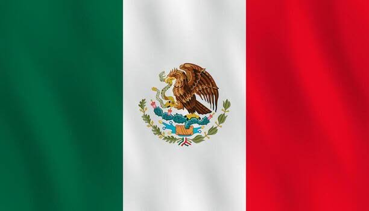
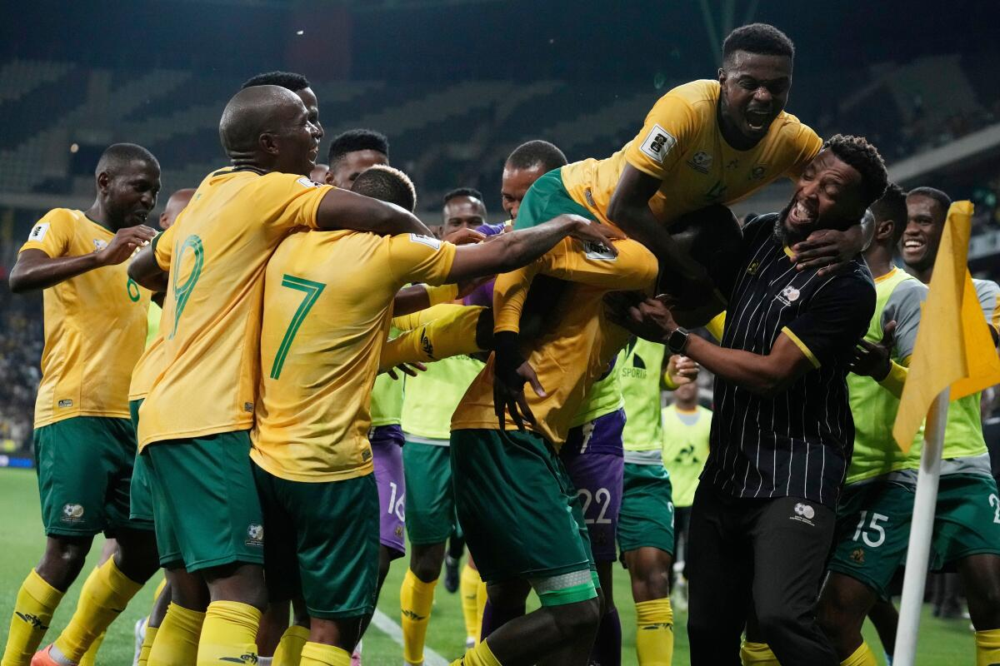

GRUPO A

DETALLE DE SELECCIONES
Estadios, historia, estadísticas, convocados y curiosidades
México 🇲🇽
Sin títulos📍 Sede / Ciudad: Ciudad de México (Estadio Azteca) / Monterrey (Estadio BBVA)

🇲🇽 Historia de México en los Mundiales
Participaciones (18)
1930, 1950, 1954, 1958, 1962, 1966, 1970, 1978, 1986, 1994, 1998, 2002, 2006, 2010, 2014, 2018, 2022, 2026.
Estadísticas Mundiales
16 Victorias | 14 Empates | 28 Derrotas
⭐ Mejor resultado: Cuartos de final (1970 y 1986)
Clasificación al Mundial 2026
Participa como selección anfitriona del Mundial 2026 junto a Estados Unidos y Canadá.
Historia en la Copa
México es una de las selecciones con más participaciones en la historia del Mundial. Ha destacado por su regularidad, tradición futbolística y el apoyo de sus aficionados.
💡 Curiosidad
México ha organizado dos Copas del Mundo: 1970 y 1986, siendo uno de los países con más experiencia como sede mundialista.
Jugadores Convocados
- Luis Malagón
- Guillermo Ochoa
- Edson Álvarez
- Hirving Lozano
- Raúl Jiménez
- Santiago Giménez
- Julián Quiñones
- Orbelín Pineda
- Johan Vásquez
- César Montes
- Jesús Gallardo
- Uriel Antuna
Sudáfrica 🇿🇦
Sin títulos📍 Sede / Ciudad: Johannesburgo (Soccer City) / Ciudad del Cabo (Cape Town Stadium)

🇲🇽 Historia de Sudafrica en los Mundiales
Participaciones (4)
1998, 2002, 2010, 2026.
Estadísticas Mundiales
3 Victorias | 5 Empates | 5 Derrotas
⭐ Mejor resultado: Fase de grupos
Clasificación al Mundial 2026
Clasificó representando a la Confederación Africana de Fútbol (CAF).
Historia en la Copa
Fue el primer país africano en organizar un Mundial en 2010. Ese torneo quedó marcado por la cultura, la música y las famosas vuvuzelas.
💡 Curiosidad
Sudáfrica 2010 fue la primera Copa del Mundo organizada en territorio africano.
Jugadores Convocados
- Ronwen Williams
- Percy Tau
- Teboho Mokoena
- Lyle Foster
- Themba Zwane
- Grant Kekana